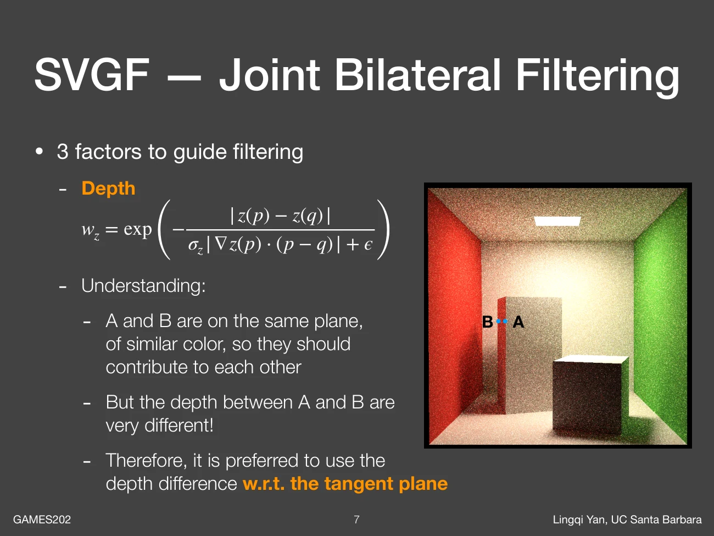
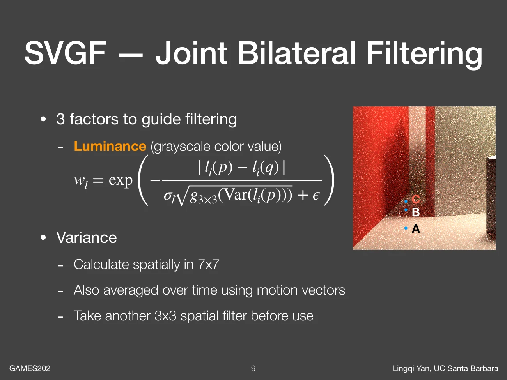
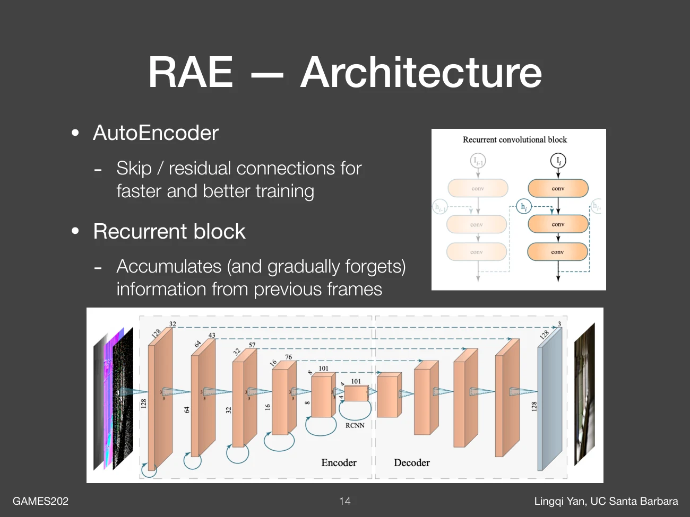
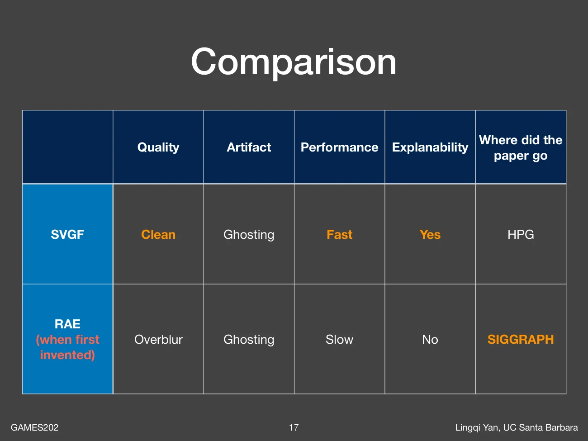
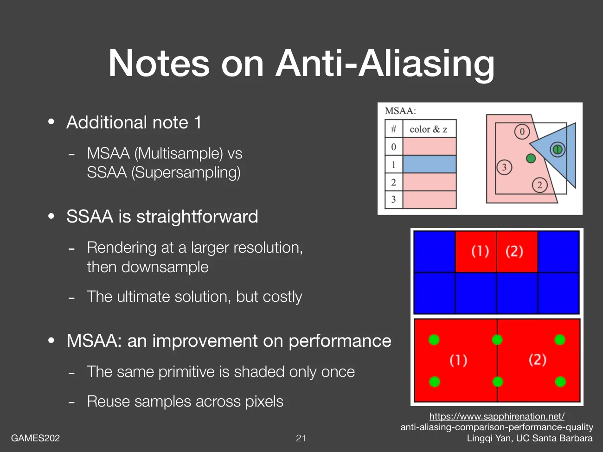
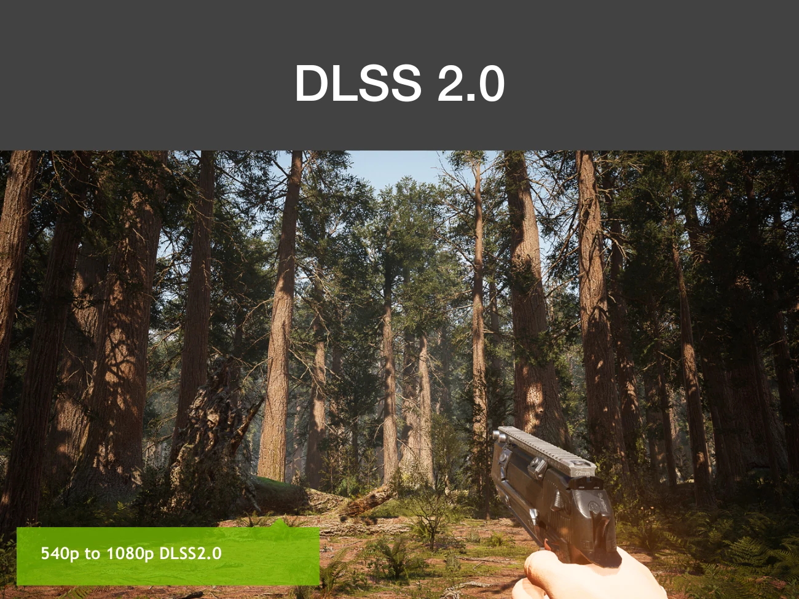
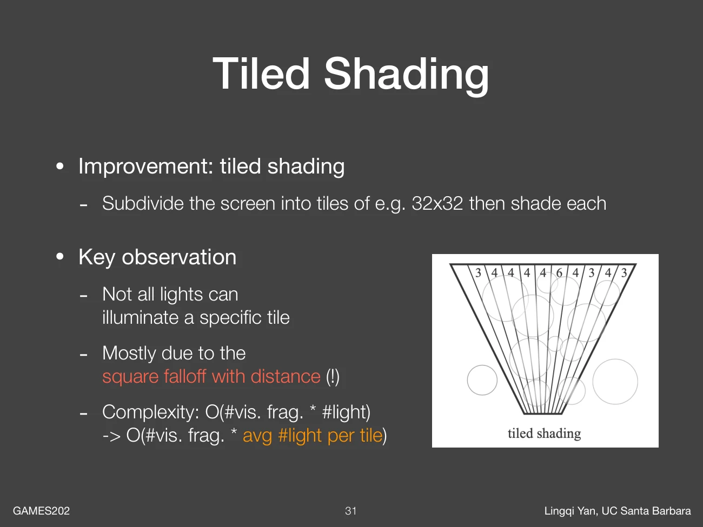
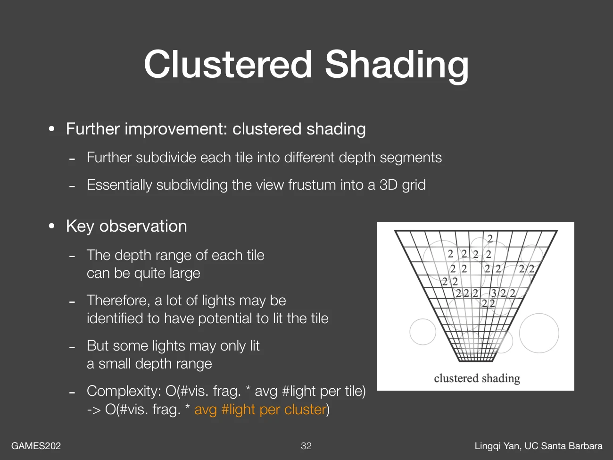
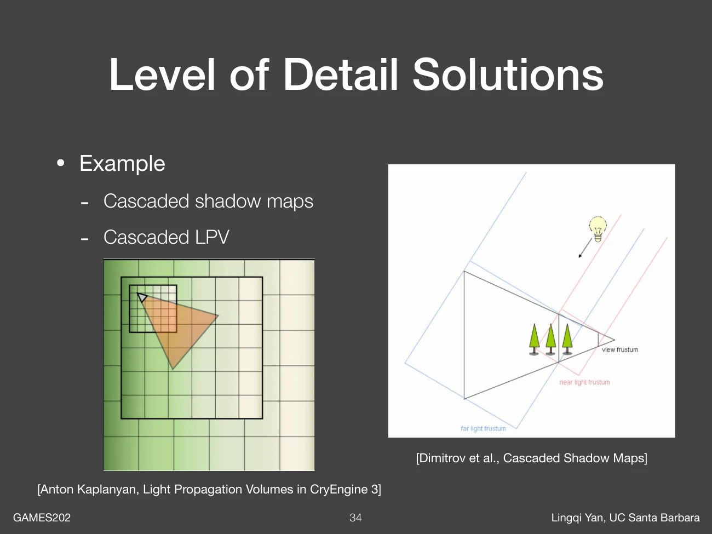
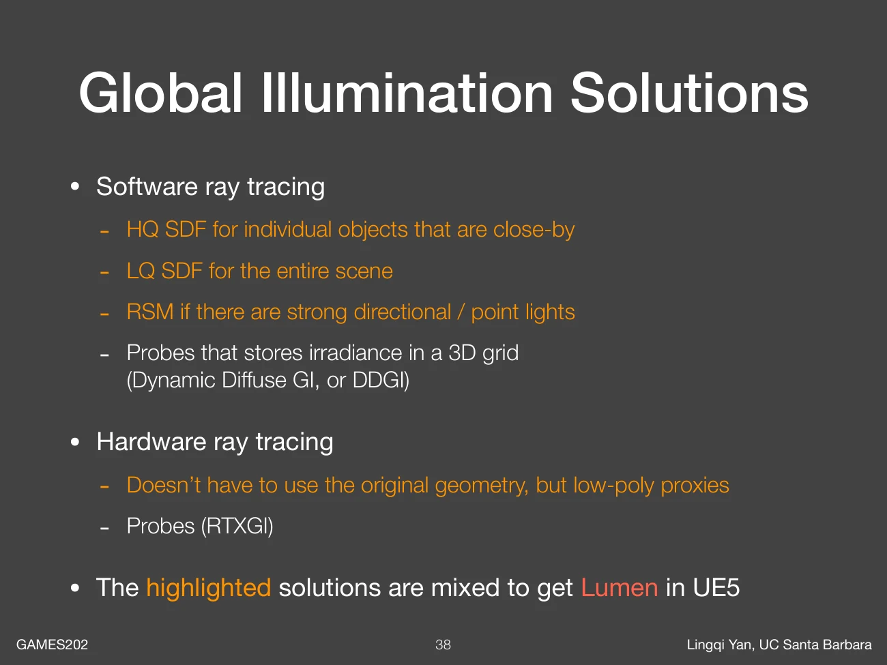

第 14 讲：最后一课——工业级实时渲染方案一览
收尾 RTRT 降噪的两种代表方法，并俯瞰工业界抗锯齿、超分、着色架构与 GI 的混合方案
◆ 学完这一讲，你应该能
能说清 SVGF 在时空降噪基础上额外引入的方差引导与深度/法线/亮度权重
能对比 SVGF 与 RAE 在质量、伪影、性能、可解释性上的取舍
能解释 TAA、DLSS 与 RTRT 时域复用之间的关系与关键差异
能说明延迟着色、分块着色、聚类着色的复杂度改进与各自代价
能列举工业 GI 的混合方案（SSR、SDF、RSM、Probe、硬件光追）并对应到 Lumen
核心结论速记
SVGF 在联合双边滤波中引入方差估计，用方差动态调整亮度权重的敏感度，并对深度权重使用切平面距离而非绝对深度差。
RAE 用循环自编码器网络做降噪，网络自动完成时域累积，但可解释性差、早期版本偏糊。
TAA 的本质是跨帧复用样本；DLSS 2 在此基础上用神经网络做超分，时域失败时不能简单 clamp。
延迟着色把着色复杂度从所有片元降到可见片元，但牺牲了 MSAA 等能力；分块与聚类着色进一步按 tile / 深度段剔除无关光源。
LoD（工业界常叫 cascaded）的核心挑战是层级切换的过渡与裂缝，几何 LoD 的 popping 可以交给 TAA 掩盖。
工业 GI 没有银弹，主流是 SSR + SDF 软光追 + RSM + Probe + 硬件光追的混合方案，Lumen 就是这些方案的混合体。
011. 从时空降噪到 SVGF：用方差告诉滤波器该信谁
上一讲已经搭好了实时 ray tracing（RTRT）降噪的基本框架：时域累积 + 运动向量 + 空域滤波。这一讲先补两个更具体的滤波方案，第一个是 SVGF（Spatiotemporal Variance-Guided Filtering）。
SVGF 的整体流程和基础时空降噪几乎一样，区别在于它多做了方差分析，并用方差来引导滤波。联合双边滤波（joint bilateral filtering）里，两个像素 \(p\) 和 \(q\) 的贡献权重由三部分相乘：
- 深度权重 \(w_z\)：不是简单比较 \(|z(p)-z(q)|\)，而是比较切平面上的深度差。直觉是：A、B 两个点在同一平面上、颜色也接近，理应互相贡献；但如果直接比绝对深度，斜面上的两点深度差可能很大，会被错误地拒绝。所以用 \(\nabla z(p)\cdot(p-q)\) 把深度差投影到切平面方向，再除以 \(\sigma_z\) 并加 \(\epsilon\) 做指数衰减。
- 法线权重 \(w_n = \max(0, n(p)\cdot n(q))^{\sigma_n}\)：法线越一致权重越大。注意它不一定是高斯，幂次形式也可以。有法线贴图时要用宏法线（macro normal），而不是贴图扰动后的细节法线，否则同一平面上细节法线不同会把本应互相贡献的像素拆开。
- 亮度权重 \(w_l\)：比较灰度亮度 \(l_i\)，分母里带上了方差 \(\mathrm{Var}(l_i(p))\)。方差大说明这个像素本身噪声大、不可信，就放宽亮度比较；方差小说明值可信，就收紧比较、避免把不同颜色的东西混进来。
方差本身怎么来？先在 7×7 邻域空域计算，再沿运动向量做时域平均，使用前再过一次 3×3 空域滤波。这样方差估计既稳又跟得上运动。
一句话总结：SVGF 的“方差引导”让滤波器在噪声大的地方大胆模糊、在干净的地方保守，从而在同等样本数下得到更干净且保边的结果。


常见坑
法线没归一化 → 法线点积可能大于 1 或为负，权重异常 → 使用前务必 normalize。
用了细节法线贴图而不是宏法线 → 同一平面上权重被错误压低、降噪不充分 → 在 G-buffer 里单独存宏法线供滤波使用。
方差估计窗口太小或不做时域平均 → 方差抖动大，滤波强度忽大忽小 → 按课件做 7×7 空域 + 时域平均 + 3×3 预滤波。
UE / Unity 落地
UE 的 Lumen 和路径追踪器内部有类似的时空降噪，但接口不暴露；做自定义时可在后处理材质里实现联合双边滤波。
Unity 的 HDRP 有自定义后处理（Custom Pass），适合实现 SVGF 这类需要 G-buffer 的滤波。
022. RAE：让网络自己学时域累积
第二个方案是 RAE（Recurrent AutoEncoder），论文标题就是“用循环降噪自编码器交互式重建蒙特卡洛图像序列”。它把降噪看成一个后处理网络：输入是噪声图像加上 G-buffer，输出是干净图像。
和 SVGF 最大的不同是：时域累积不是手写规则，而是网络自己学出来的。网络结构有两个关键设计：
- 自编码器 / U-Net 结构：先下采样再上采样，中间用 skip connection（跳跃连接）把浅层细节直接接到深层，训练更快、重建更准。
- 循环卷积块（recurrent convolutional block）：把上一帧的隐状态带进来，相当于让网络自己维护一个“历史缓冲区”，并逐渐遗忘太久远的信息。
课件给了一张对比表，很值得记住：
| 方案 | 质量 | 伪影 | 性能 | 可解释性 | 出处 |
|---|---|---|---|---|---|
| SVGF | 干净 | 有 ghosting | 快 | 有 | HPG |
| RAE（刚提出时） | 偏糊 | 有 ghosting | 慢 | 无 | SIGGRAPH |
这张表说明：RAE 当时质量并不全面占优（偏糊），速度也慢，而且网络是黑盒、不可解释。但它代表了方向——用学习的方法替代手工滤波规则。今天工业界的 DLSS 等方案，某种程度上就是这条路线在超分上的延续。


补充说明
RAE 的“循环”思想与 RNN 类似：隐状态承载历史，门控决定遗忘多少。
常见坑
以为 RAE 全面优于 SVGF → 课件表格明确写 RAE 当时偏糊且慢 → 选型要看场景和约束，不是论文越新越好。
循环块忘记 detach 上一帧隐状态 → 反向传播穿过时间导致显存爆炸 → 训练时对历史状态做截断。
UE / Unity 落地
UE 的 DLSS / TSR 插件、Unity 的 DLSS 插件都是“网络降噪/超分”思路的工业落地，但它们是闭源推理，不能直接改网络。
想自己训练降噪网络，可用 Unity Barracuda 或 UE 的 NNE 插件做推理。
033. 抗锯齿与超分：TAA、MSAA/SSAA、SMAA 与 DLSS
抗锯齿的根源是每像素样本数不够。光栅化时一个像素只采一个点，几何边缘就会走样。终极解法就是多采样，但直接超采样太贵，于是有了几条路线：
- SSAA（超采样）：用更大分辨率渲染再降采样，最直接也最贵。
- MSAA（多重采样）：每个图元只着色一次，但每个像素存多个覆盖样本，靠复用样本降低着色成本。
- TAA（时域抗锯齿）：把样本分散到多帧，跨帧复用。它和 RTRT 里的时域累积几乎一模一样——都需要运动向量、都需要处理时域失败（ghosting）。
- SMAA（增强子像素形态学抗锯齿）：纯图像后处理，历史是 FXAA → MLAA → SMAA。
这里有一个非常重要的工程细节：G-buffer 绝对不能被抗锯齿。因为 G-buffer 存的是几何属性（法线、深度、粗糙度），一旦被混合，后续着色就会拿到不存在的“平均法线/平均深度”，产生错误。所以 TAA 通常放在 G-buffer 之后、光照之前或之后要小心处理。
再往上就是超分（super resolution）。DLSS 2 的本质是“又一个 TAA 类应用”：用低分辨率渲染，再靠时域信息重建高分辨率。课件特别指出，DLSS 2 的关键难题是：时域失败时不能简单 clamp。传统 TAA 遇到历史不可信可以 clamp 到当前邻域，但超分要求每个更小的像素都有明确值，clamp 会直接糊掉。所以关键在于“比 clamp 更聪明地使用时域信息”。
课件还给了 DLSS 2 的对比图：540p 双三次上采样到 1080p、540p 经 DLSS 2 到 1080p、原生 1080p 开 TAA。可以直观看到双三次上采样很糊，DLSS 2 接近原生。最后，DLSS 的推理性能本身是工程难点（如果一帧跑 30ms 就没意义了），AMD 的 FidelityFX Super Resolution 和 Facebook 的 Neural Supersampling 是同类思路。


补充说明
TAA 的时域失败处理（clamp / neighborhood clamping）是理解 DLSS 2 为什么难的关键。
常见坑
对 G-buffer 做 TAA/MSAA → 法线、深度被混合，光照出现鬼影或错误 → G-buffer 保持未抗锯齿，只对最终颜色做时域处理。
TAA 运动向量用错（比如用了相机运动但漏了物体运动）→ 动态物体拖影 → 检查运动向量是否包含骨骼/物体变换。
以为 DLSS 只是“高级双三次” → 双三次上采样很糊，DLSS 靠时域样本重建 → 对比图 P24/P25 能直接看出差别。
UE / Unity 落地
UE：项目设置里 Anti-Aliasing Method 可选 TAA/TSR/MSAA/FXAA；TSR 是 UE5 的时域超分，思路与 DLSS 2 同类。
Unity：URP/HDRP 的 Anti-aliasing 下拉框有 FXAA/SMAA/TAA；HDRP 还支持 DLSS 和 FSR。
MSAA 在延迟渲染管线里通常不可用（G-buffer 多采样代价高），这也是延迟着色的一大代价。
044. 着色架构：延迟着色、分块着色、聚类着色
延迟着色（deferred shading）最初是为了省着色时间。先看光栅化流程：三角形 → 片元 → 深度测试 → 着色 → 像素。问题是每个片元都要着色，复杂度是 \(O(\#fragment \times \#light)\)。但大多数片元最终被遮挡、根本看不见。
于是延迟着色把场景光栅化两遍：第一遍只更新深度缓冲、不着色；第二遍只对通过深度测试的可见片元着色。复杂度变成 \(O(\#vis.\ frag. \times \#light)\)。这隐含假设“光栅化比着色所有不可见片元快得多”，通常成立。代价是：难以做抗锯齿（G-buffer 多采样很贵），以及需要存 G-buffer 的带宽。
分块着色（tiled shading）进一步优化：把屏幕切成 32×32 的 tile，每个 tile 只考虑能照到它的光源。关键观察是：由于距离平方衰减，大多数光源照不到某个 tile。复杂度从 \(O(\#vis.\ frag. \times \#light)\) 降到 \(O(\#vis.\ frag. \times avg\#light\ per\ tile)\)。
聚类着色（clustered shading）再进一步：每个 tile 再按深度切段，相当于把视锥体切成 3D 网格。因为一个 tile 的深度范围可能很大，很多光源被判定“可能照到”但其实只照到很浅的一段；按深度分段后，每个 cluster 的光源列表更精确，复杂度再降。
这三者是递进关系：延迟着色解决“看不见的片元不要着色”，分块解决“照不到的光源不要算”，聚类解决“深度上照不到的光源不要算”。


补充说明
延迟着色的“两遍光栅化”是理解现代管线的基础，很多优化都是在这个骨架上做剔除。
常见坑
在延迟管线里强行开 MSAA → G-buffer 带宽和存储爆炸 → 改用 TAA/FXAA 等后处理抗锯齿。
tile 尺寸选得过大 → 每 tile 光源列表过长，剔除收益低 → 32×32 是常见折中，可按场景调。
聚类着色的深度分段用线性划分 → 近处段太粗、远处段浪费 → 通常按对数或指数划分深度。
UE / Unity 落地
UE 默认就是延迟渲染（Deferred Shading），前向渲染需在材质/项目设置里显式开启；UE 的移动端用前向。
Unity 的 URP 可选 Forward/Deferred，HDRP 默认 Deferred；URP 的 Forward+ 本质是分块/聚类思路的轻量版。
055. LoD 与级联：工业界的“cascaded”
LoD（Level of Detail）的思想和纹理 MIPMAP 一样：根据距离选合适的细节层级，省计算。工业界常把多层级方案叫 cascaded（级联）。
两个典型例子：
- 级联阴影贴图（cascaded shadow maps）：把相机视锥按距离分成几段，每段用不同分辨率的阴影图，近处精细、远处粗糙。
- 级联 LPV（Light Propagation Volumes）：类似地按距离分级传播光照。
LoD 的核心挑战是层级之间的过渡。如果直接切换，边界处会突变（popping）。常见做法是在边界附近让两层重叠并做混合（blend）。
几何 LoD 也是同样思路：预生成一组不同三角形数的简化模型，按到相机的距离选择显示哪个（或显示模型的哪一部分，使得没有三角形大于一个像素）。popping 怎么办？课件给了一个很实用的答案：交给 TAA 去掩盖。因为 TAA 会跨帧混合，短暂的不连续会被时域平滑掉。
课件还列了一堆“强技术难点”：不同地方不同层级怎么处理裂缝（cracks）、如何动态加载调度层级以用好缓存和带宽、用三角形还是几何纹理表示几何、如何做裁剪和剔除。这些是工程落地时真正花时间的地方。

补充说明
“cascaded”在工业界不限于阴影，任何多层级方案都可能这么叫。
常见坑
级联阴影的分段边界不混合 → 阴影分辨率突变可见 → 在边界附近做重叠与 blend。
几何 LoD 切换点太近 → 明显 popping → 拉开切换距离或依赖 TAA 掩盖。
不同 LoD 层级之间顶点不匹配 → 出现裂缝 → 用 skirts 或边界顶点对齐。
UE / Unity 落地
UE：Cascaded Shadow Maps 在 Directional Light 的 Dynamic Shadow Distance 等参数里配置；Nanite 本质是自动几何 LoD + 虚拟几何。
Unity：URP/HDRP 的 Shadow Cascades 可在 Light 组件里设置；LOD Group 组件做几何 LoD。
066. 全局光照的混合方案与 Lumen
这一节是全课的收束：没有单一的 GI 方案能适合所有情况，除了完整的 RTRT，但当前世代完全用 RTRT 还是太贵。所以工业界普遍用混合方案（hybrid solutions）。
课件列出的可能组合包括：
- SSR（屏幕空间反射）做粗略 GI 近似——但它会失败：屏幕外的东西、被遮挡的东西都拿不到。
- 软件光追：近处物体用高质量 SDF（HQ SDF），整个场景用低质量 SDF（LQ SDF）；有强方向光/点光时用 RSM（反射阴影贴图）；用 3D 网格存辐照度的 Probe（DDGI，动态漫反射 GI）。
- 硬件光追：不必用原始几何，可以用低模代理（low-poly proxies）；Probe 方案如 RTXGI。
课件明确说：高亮的这些方案混合起来就是 Lumen。也就是说 Lumen 不是单一算法，而是 SSR + SDF 软光追 + RSM + DDGI + 硬件光追等按场景和平台组合的工程系统。
理解这一点对独立开发者很重要：不要指望“一个 GI 开关解决所有问题”，而要理解每种方案的失效场景，按场景组合。比如室内小场景 SDF 软光追够用，大世界可能需要 DDGI + 硬件光追。

补充说明
课件的“混合方案”清单是理解 Lumen 设计哲学的最好入口。
常见坑
只开 SSR 就以为有 GI → 屏幕外物体不贡献、粗糙反射缺失 → 需要 Probe/SDF 等补充。
SDF 精度不够 → 软光追漏光或自遮蔽 → 近处用 HQ SDF，远处用 LQ SDF。
以为 Lumen 是单一算法 → 它是一组混合方案 → 调参时要理解当前场景走的是哪条路径。
UE / Unity 落地
UE5：Lumen 在项目设置里开启，Global Illumination Method 选 Lumen；反射也可选 Lumen。软件光追与硬件光追可在 Lumen 设置里切换。
Unity：HDRP 的 Screen Space Global Illumination 是 SSR 类方案；RTXGI 插件提供 DDGI。
引擎对照表
| 概念 / 效果 | Unreal Engine | Unity |
|---|---|---|
时域降噪/超分 | TSR、DLSS 插件、Lumen 内部降噪 | HDRP TAA、DLSS/FSR 插件 |
抗锯齿 | TAA/TSR/MSAA/FXAA（项目设置） | URP/HDRP Anti-aliasing 下拉框、SMAA |
延迟/分块着色 | 默认 Deferred，移动端 Forward | URP Forward+/Deferred，HDRP Deferred |
级联阴影 | Directional Light 的 Cascaded Shadow Maps | Light 组件 Shadow Cascades |
几何 LoD | Nanite、LOD Group | LOD Group 组件 |
混合 GI | Lumen（SSR+SDF+RSM+DDGI+硬件光追） | HDRP SSGI、RTXGI 插件 |
术语双语表
| English | 中文 | 说明 |
|---|---|---|
| SVGF | 时空方差引导滤波 | 用方差引导联合双边滤波的 RTRT 降噪方案 |
| RAE | 循环自编码器 | 用循环网络自动做时域累积的降噪方案 |
| Joint Bilateral Filtering | 联合双边滤波 | 用深度/法线/亮度等引导权重做保边滤波 |
| TAA | 时域抗锯齿 | 跨帧复用样本的抗锯齿方法 |
| DLSS | 深度学习超采样 | 用神经网络做时域超分，DLSS 2 不依赖低分辨率历史 |
| Deferred Shading | 延迟着色 | 先光栅化深度、再只对可见片元着色 |
| Tiled/Clustered Shading | 分块/聚类着色 | 按屏幕 tile 和深度段剔除无关光源 |
| Cascaded | 级联 | 工业界对多层级 LoD 方案的叫法 |
| DDGI | 动态漫反射全局光照 | 用 3D 网格 Probe 存辐照度的 GI 方案 |
| Lumen | UE5 的混合 GI 系统 | SSR+SDF+RSM+DDGI+硬件光追的组合 |
课后练习
01 SVGF 的深度权重为什么用切平面投影后的深度差，而不是直接相减？请举一个反例。
查看答案
提示：
考虑斜面上的两个点。
直接相减时，斜面上同一平面内的两点深度差可能很大，会被误判为不同表面而拒绝贡献，导致降噪不充分。用 \(\nabla z(p)\cdot(p-q)\) 投影到切平面后，同一平面上的点深度差接近 0，权重接近 1，符合“同一平面应互相贡献”的直觉。
02 延迟着色把复杂度从 \(O(\#fragment \times \#light)\) 降到 \(O(\#vis.\ frag. \times \#light)\)，它隐含了什么假设？代价是什么？
查看答案
提示：
想想光栅化和着色的相对开销。
隐含假设是“光栅化整个场景比着色所有不可见片元快得多”，通常成立。代价主要是难以做 MSAA（G-buffer 多采样存储和带宽昂贵），以及需要存 G-buffer 的带宽。
03 TAA 和 RTRT 的时域累积有什么共同点？DLSS 2 为什么不能像 TAA 那样在时域失败时简单 clamp？
查看答案
提示：
想想超分对每个小像素的要求。
共同点是都靠运动向量跨帧复用样本、都要处理时域失败（ghosting）。TAA 遇到历史不可信可以 clamp 到当前邻域颜色；但 DLSS 2 要把低分辨率重建为高分辨率，每个更小的像素都需要明确值，clamp 会直接糊掉细节，所以必须更聪明地使用时域信息（如神经网络推理）。
04 分块着色和聚类着色分别解决了什么问题？复杂度各变成什么？
查看答案
提示：
一个按屏幕 tile，一个再按深度分段。
分块着色解决“照不到某个 tile 的光源不要算”，复杂度从 \(O(\#vis.\ frag. \times \#light)\) 降到 \(O(\#vis.\ frag. \times avg\#light\ per\ tile)\)。聚类着色再按深度分段，解决“深度上照不到的光源不要算”，复杂度进一步降到 \(O(\#vis.\ frag. \times avg\#light\ per\ cluster)\)。
05 如果你要在 UE5 里做一个室内小场景，Lumen 的哪条路径可能最划算？如果换成大世界室外呢？
查看答案
提示：
参考课件列的软件/硬件光追方案清单。
室内小场景：SDF 软光追 + DDGI Probe 通常够用，硬件光追可选。大世界室外：SDF 精度不够、屏幕外信息多，需要 DDGI + 硬件光追（低模代理）+ RSM 处理强方向光，SSR 只做补充。答案不唯一，能说出每种方案的失效场景即可。